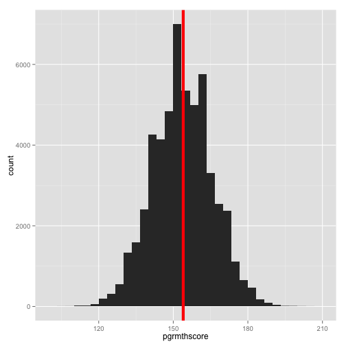
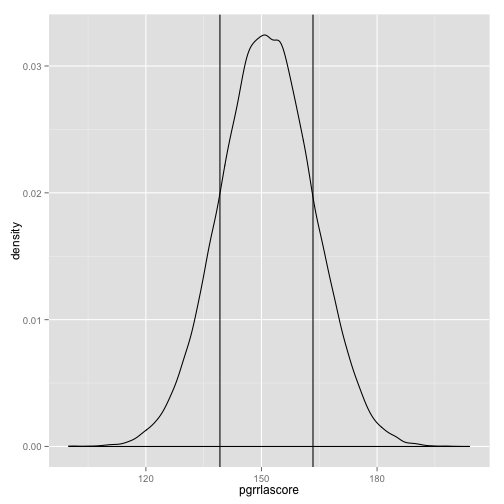

- Review:
- Syllabus
- Describing Nominal/Ordinal Scale Data
- Frequencies
- Proportions
- Percentages
- Cross tabulations
- Finding the number of unique categories
- Describing Intervallic/Ratio Scale Data
- Location
- Deviance/Variance
- Higher order parameters
- Next Class
Descriptive Statistics:
Measures of Central Tendency and Summarizing Data
William R. Buchanan, Ph.D.
Strategic Data Fellow at MDE/Adjunct Prof at JSU
Overview
Review
- The lecture tonight is fairly compact, so I'll provide some time a bit later for you to ask some last minute questions related to the syntax
- Keep practicing the skills required to create graphs because you'll need to use it later in the semester
Loading Data into R
*If you need additional help for the next set of commands you can use ?table, ?prop.table, and ?round to see the help files for each of these commands.
library("foreign"); library("ggplot2")
# Load some data for the examples
yourData <- as.data.frame(read.dta(#
"http://www.paces-consulting.org/stata/JSU/Fall2014/JohnDoe-task1.dta"))
Describing Nominal/Ordinal Scale Data
- Frequencies tell you the number of observations per category
- You can use the terms proportions and percentages interchangably when describing categorical data since you can only have up to 100%
- Proportions tell you the ratio of the number of observations in that category compared to all observations
- The marginal proportions give you the proportions for based on the total number of observations per row/column in a cross tabulation
- Sometimes you'll also want to know the number of unique categories
Frequencies
table(yourData$race)
##
## Asian Black or African American
## 5 27413
## Hispanic or Latino Two or More Races
## 380 0
## American Indian or Alaskan Native Native Hawaiian or Pacific Islander
## 0 0
## White
## 25832
table(yourData$cgrrlalev)
##
## Minimal Basic Proficient Advanced
## 315 3034 20770 25846
table(yourData$rlaprogram)
##
## Did not participate in RLA Intervention
## 30389
## Participated in RLA Intervention
## 23241
Proportions
prop.table(table(yourData$ed))
##
## Not Economically Disadvantaged Economically Disadvantaged
## 0.35 0.65
prop.table(table(yourData$pgrmthlev))
##
## Minimal Basic Proficient Advanced
## 0.1515 0.2174 0.4362 0.1948
prop.table(table(yourData$mthprogram))
##
## Did not participate in Math Intervention
## 0.6422
## Participated in Math Intervention
## 0.3578
Percentages
prop.table(table(yourData$scd)) * 100
##
## Non-Severe Cognitive Disability Student
## 97.999
## Student w/Severe Cognitive Disability
## 2.001
prop.table(table(yourData$female)) * 100
##
## Male Female
## 51 49
- You can round the values too
# Put parentheses around everything before the comma to make sure it is
# evaluated first The number after the comma is how many digits past the
# decimal you'll get back
round((prop.table(table(yourData$mthprogram)) * 100), 1)
##
## Did not participate in Math Intervention
## 64.2
## Participated in Math Intervention
## 35.8
Cross-Tabulations of frequencies
# Same as regular frequencies but separate the two variables with a comma
table(yourData$female, yourData$ed)
##
## Not Economically Disadvantaged Economically Disadvantaged
## Male 9678 17673
## Female 9092 17187
Cross-Tabulations of proportions
# Same as regular proportions but separate the two variables with a comma
prop.table(table(yourData$female, yourData$ed))
##
## Not Economically Disadvantaged Economically Disadvantaged
## Male 0.1805 0.3295
## Female 0.1695 0.3205
Cross-Tabulations of percentages
# Same as regular proportions but separate the two variables with a comma
prop.table(table(yourData$female, yourData$ed)) * 100
##
## Not Economically Disadvantaged Economically Disadvantaged
## Male 18.05 32.95
## Female 16.95 32.05
Finding the number of unique categories
# Find the number of unique districts and schools
length(unique(yourData$distid))
## [1] 25
length(unique(yourData$schid))
## [1] 182
Describing Intervallic/Ratio Scale Data
Location
- The mean and the average are the same
- The median is the value in the middle of the range of all the values (e.g., 50%)
- The maximum and minimum are the lowest and highest observed values
Deviance/Variance
- Variance and Standard Deviation describe how far values are spread from the mean - on average
- The interquartile range is like taking the median from the minimum to median values (e.g., 25%) and the median to maximum values (e.g., 75%)
- The standard deviation is the squared root of the variance; the Variance is the standard deviation squared; this tells you how far the values spread (on average) from the mean
High Order Moment Conditions
- Skewness indicates whether one tail of the distribution is longer than the other (e.g., whether or not the distribution is symmetrical)
- Kurtosis indicates whether or not the middle of the distribution is too flat or too sharp (e.g., too few observations in the middle or too many observations in the middle of the distribution)
Location
# The argument after the variable name means to exclude NA (not applicable)
# values
mean(yourData$cgrmthscore, na.rm = TRUE)
## [1] 165.1
# Store the value of the mean to use it in a graph on the next slide
vertical <- mean(yourData$cgrmthscore, na.rm = TRUE)
# You can add it to a graph too (for a vertical line you need to use xintercept)
ggplot(yourData, aes(x = cgrmthscore)) + geom_histogram() + #
geom_vline(xintercept = vertical, color = "red")

# What happens if there are NA values and you don't use na.rm = TRUE?
someValues <- c(1, 3, 4, 9, 17, NA, 4, 4, 6)
mean(someValues)
## [1] NA
mean(someValues, na.rm = TRUE)
## [1] 6
# What happens if you try to calculate the mean of a nominal scale variable?
mean(yourData$race)
## Warning: argument is not numeric or logical: returning NA
## [1] NA
# Get the median - or 50th percentile - of a variable
median(yourData$pgrmthscore, na.rm = TRUE)
## [1] 154
# You can also add the median value to a plot by storing it as well
vertical <- median(yourData$pgrmthscore, na.rm = TRUE)
# Using a different color and size you can make things easier to see
ggplot(yourData, aes(x = pgrmthscore)) + geom_histogram() + #
geom_vline(xintercept = vertical, size = 2, color = "red")

# Get the median, interquartile range, and the minimum/maximum values
fivenum(yourData$cgrrlascore, na.rm = TRUE)
## [1] 122.4 158.3 165.6 172.8 215.0
# If you wanted to see where all of these values are located you can do that
# too
multipleLines <- fivenum(yourData$cgrrlascore, na.rm = TRUE)
# Graph the distribution with Tukey's Five Number Summary
ggplot(yourData, aes(x = cgrrlascore)) + geom_histogram() + #
geom_vline(xintercept = multipleLines, size = 2, color = "orange")

Deviance/Variance
# Get the standard deviation of a variable
sd(yourData$pgrrlascore, na.rm = TRUE)
## [1] 12.07
# Store the standard deviation & the mean for the next graph
sds <- sd(yourData$pgrrlascore, na.rm = TRUE)
center <- mean(yourData$pgrrlascore, na.rm = TRUE)
# Show 1 standard deviation around the mean
ggplot(yourData, aes(x = pgrrlascore)) + geom_density() + #
geom_vline(xintercept = center - sds) + geom_vline(xintercept = center + sds)

# Get the variance of a variable
sd(yourData$pgrmthscore, na.rm = TRUE)^2
## [1] 142.8
Higher order moments
# If you don't have it already, install the moments package and load it
install.packages("moments", dep = TRUE)
## Error: trying to use CRAN without setting a mirror
library("moments")
# Get the skewness of a variable
skewness(yourData$pgrmthscore, na.rm = TRUE)
## [1] 0.006127
Skewness
- This tells you how assymetrical a distribution is (e.g., are the tails of the distribution the same length and density on both sides of the mean)
- When data are skewed there are typically a handful of observations that are far from the mean (think of comparing the average American net wealth to the net weath of Carlos Slim and/or Bill Gates)
- If the data are highly skewed, it will affect the mean, but may not have much of an effect on the median
- Because deviance/variance is a function of the mean, it will also affect these values as well
# Get the kurtosis of a variable
kurtosis(yourData$pgrmthscore, na.rm = TRUE)
## [1] 2.985
Kurtosis
- While skewness indicates if the tails aren't the same length on both sides, kurtosis tells you how fat the tails of the distribution are.
- If the tails are too thin, your density plot will look like a spike
- If the tails are too fat, your density plot will look like someone flattened the middle of the curve
Next Class
- Next class we'll start looking at some different packages that can help you aggregate and disaggregate data
- Creating school/district level summaries
- Creating summaries for subpopulations within the schools/districts
- You need to be very comfortable with the commands from tonight in order to test assumptions for t-tests and correlations